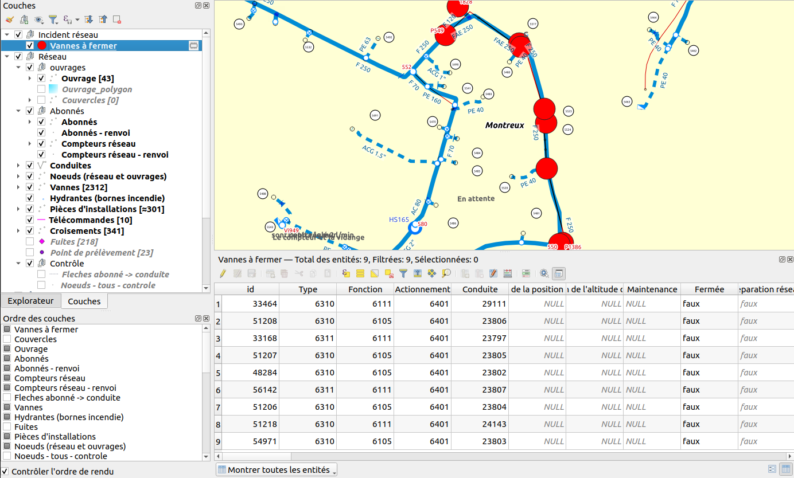
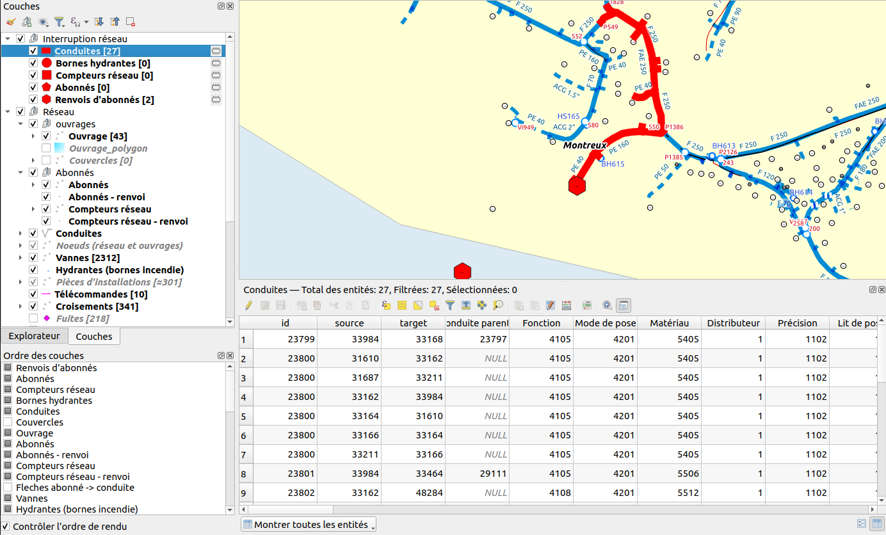

3.9. Simulace zásahu v síti
Nástroje pro simulaci síťových zásahů jsou k dispozici od verze 1.4.0.
Tyto nástroje jsou v projektu QGIS prezentovány jako akce.
3.9.1. Incident v síti
Tento nástroj identifikuje síťové ventily, které mají být uzavřeny a které jsou nejblíže incidentu. Nástroj je k dispozici v akci „Incident“ na vrstvě „Pipes“.
Incident v síti se nachází na souřadnicích, kde uživatel provedl akci (akci lze spustit kliknutím pravým tlačítkem myši na potrubí).
Dialogové okno umožňuje zadat maximální vzdálenost, kterou je třeba urazit při hledání ventilů, které mají být uzavřeny.
Uživatel může také zaškrtávacím políčkem zvolit, zda se má zastavit pouze na síťových ventilech, nebo ne. Pokud políčko není zaškrtnuto, budou brány v úvahu i ventily na větvích a zobrazí se ve výsledku.
Výsledkem je dočasná vrstva. Uzavírané ventily lze vyhledat v atributové tabulce.
Příklad zohledňující pouze síťové ventily:
Výsledek je následující:

Příklad zohledňující síťové ventily a odbočky:

Výsledek je následující:
3.9.2. Znečištění v síti
Tento nástroj umožňuje identifikovat potrubí a odběratele zasažené znečištěním. Nástroj je k dispozici v akci „Znečištění“ na vrstvě „Potrubí“.
Znečištění sítě se nachází na souřadnicích, kde uživatel provedl akci (akci lze spustit kliknutím pravým tlačítkem myši na potrubí).
Dialogové okno umožňuje zadat maximální vzdálenost, která má být při vyhledávání potrubí a účastníků překonána.
Uživatel může zvolit, zda se má zastavit u síťových ventilů, zastavit se u účastnických ventilů a omezit vyhledávání na aktuální tlakovou zónu pomocí zaškrtávacích políček.
Výsledkem je skupina dočasných vrstev. Do identifikovaných potrubí a odběratelů lze nahlížet prostřednictvím atributové tabulky.
Například zastavením na síťových a účastnických ventilech:

Výsledek je následující:
3.9.3. Přerušení sítě
Tento nástroj umožňuje identifikovat potrubí, měřiče, hydranty a odběratele postižené přerušením sítě. Nástroj je k dispozici v akci „Přerušení sítě“ ve vrstvě „Ventily“.
Přerušení sítě je charakterizováno několika uzavřenými ventily, které uživatel identifikuje při zahájení akce, a potrubím, které definuje stranu sítě zasaženou přerušením.
Výsledkem je skupina dočasných vrstev. Do identifikovaných síťových objektů lze nahlížet prostřednictvím atributové tabulky.
Příklad přerušení sítě:
Výsledek je následující:
